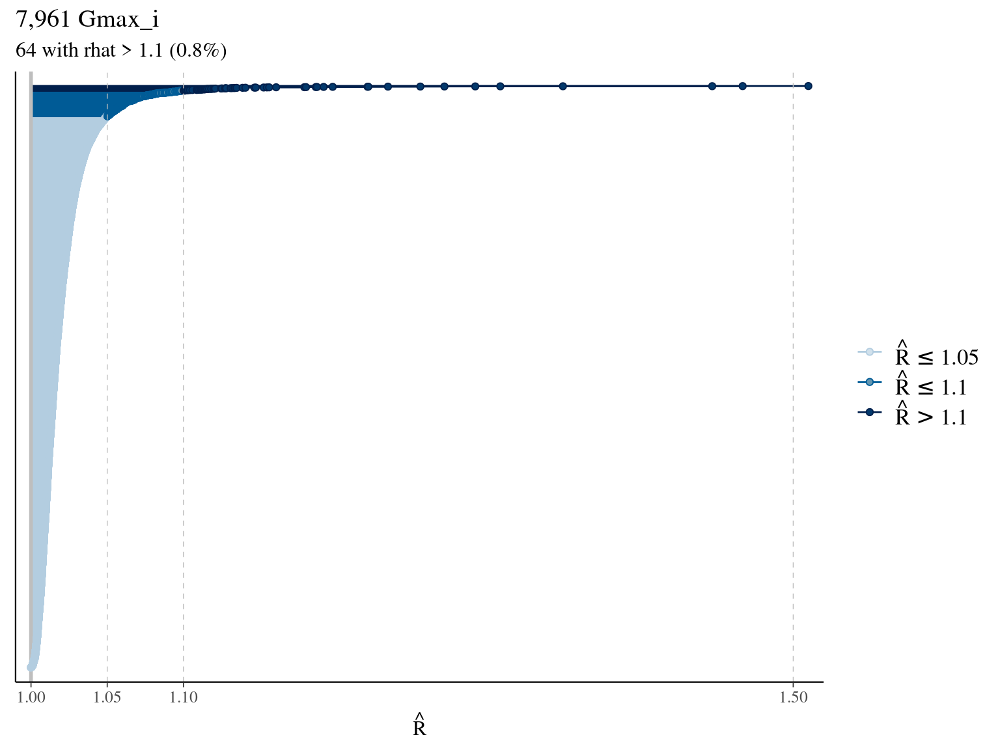
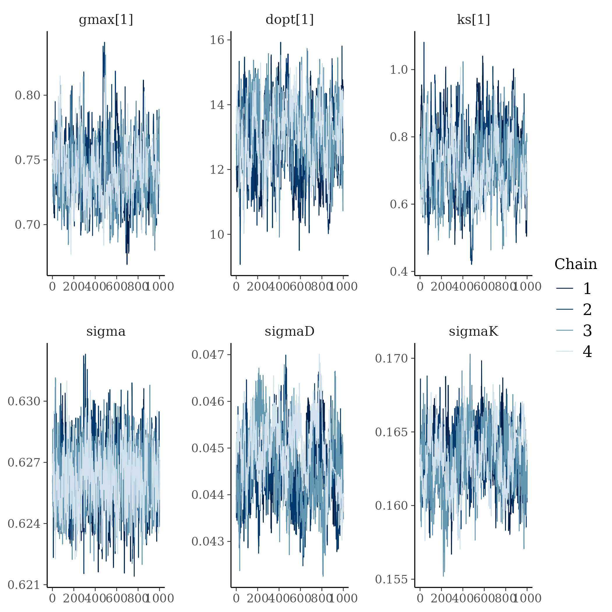
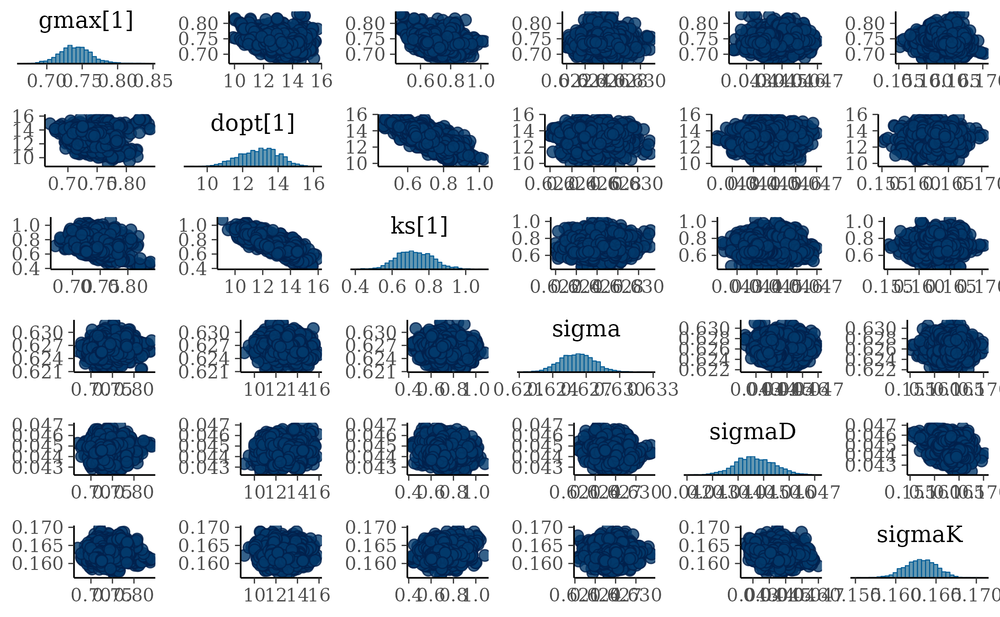
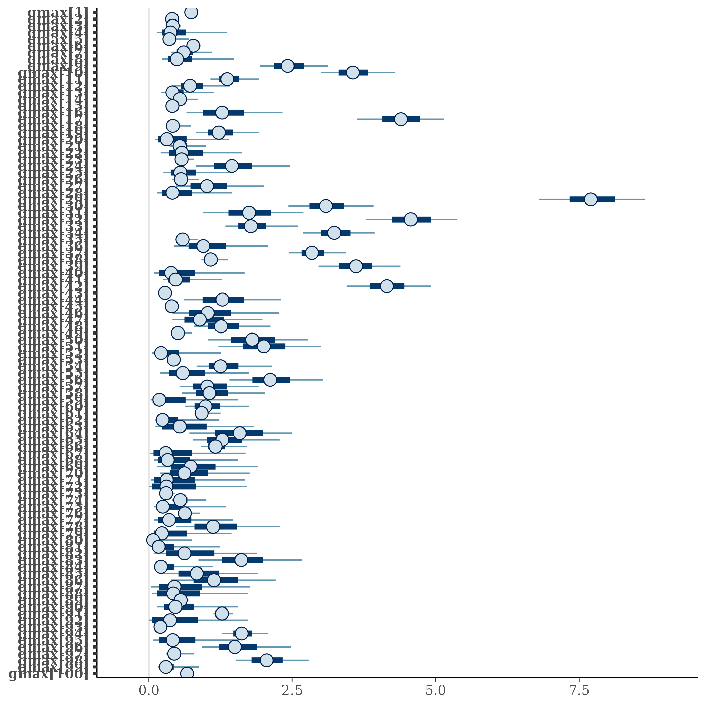

Chapter 3 Model fit
In this chapter, I fitted the selected model.
3.1 Data
I focused on trees at 20 meters from any plot edges for neighbourhood effect. I used only recruited trees in the censuses with at least 10 measurements of diameter at breast height (DBH, cm). I used only species with at least 10 trees following previous requirements (Tab. 3.1 & Fig. 3.1).
| N | Median | Minimum | Maximum | |
|---|---|---|---|---|
| families | 38 | |||
| genera | 95 | |||
| species | 138 | |||
| individuals | 7 961 | |||
| observations | 117 688 | |||
| census | 13 | 11 | 30 | |
| year0 | 1 995 | 1 985 | 2 010 | |
| yearmax | 2 019 | 1 995 | 2 021 | |
| dbh0 | 11 | 5 | 15 | |
| dbhmax | 15 | 6 | 77 |
Figure 3.1: Tree diameter trajectories in reduced data. Color represent individuals.
3.2 Model
I used a Gompertz model (Hérault et al. 2011), were the diameter of individual \(i\) at year \(t\) is the sum of annual growth from \(t0\) to \(t\):
\[ DBH_{t,i,s} \sim \mathcal N (10 + Gmax_i \times \sum _{y=1|DBH_{t=0}} ^{y=t} exp(-\frac12.[\frac{log(\frac{DBH_{t,i}}{100.Dopt_i})}{Ks_i}]^2)), \sigma) \\| Dopt_i \sim \mathcal N(Dopt_s,\sigma_D), Ks_i \sim \mathcal N(Ks_s,\sigma_K) \]
The annual growth rate for individual \(i\) at year \(y\) with a diameter of \(DBH_{y,i}\) is defined following a Gompertz model (Gompertz 1825) already identified as the best model for growth-trajectories in Paracou (Hérault et al. 2011), where \(Gmax_i\) is the fixed maximum growth potential of every individual, \(Dopt_i\) is the optimal diameter at which the individual reaches its maximum growth potential, and \(Ks_i\) is the kurtosis defining the width of the bell-shaped growth-trajectory (see figure 1 in Hérault et al. 2011). \(Dopt_i\) and \(Ks_i\) are random effects centered on species parameters \(Dopt_s\) and \(Ks_s\) with associated variances \(\sigma_D\) and \(\sigma_K\).
3.3 Fit
The model correctly converged (\(\hat R < 1.1\)) for the majority of \(Gmax_i\). All \(\sigma\) have a small posterior but difficulties to converge. The correlation between \(Dopt\) and \(Ks\) is acceptable but marked. \(Gmax_i\) posteriors have logical uncertainty but are varying widely among individuals.



